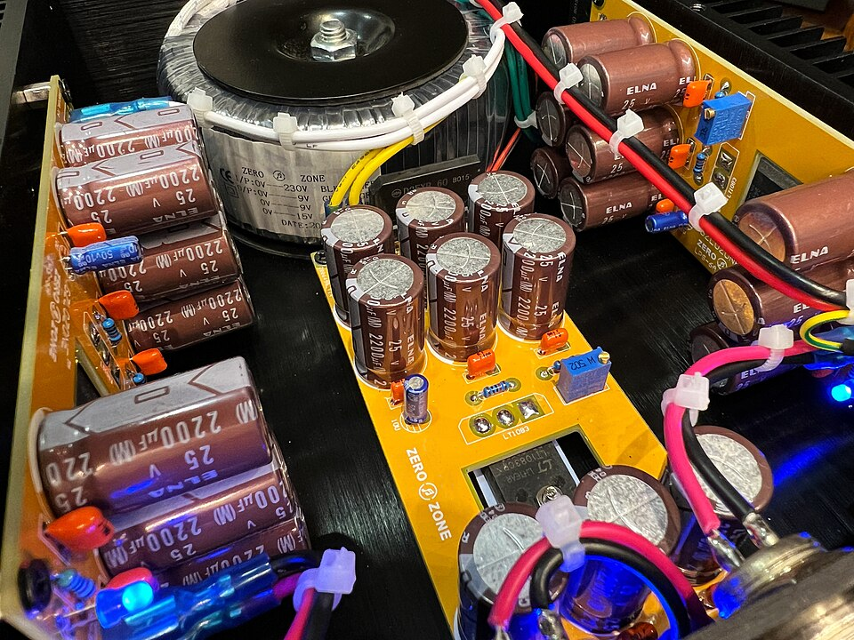
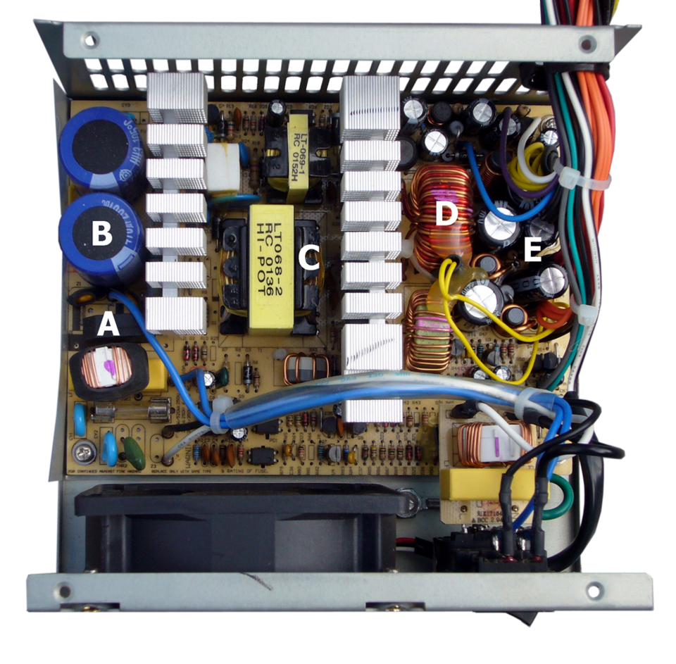
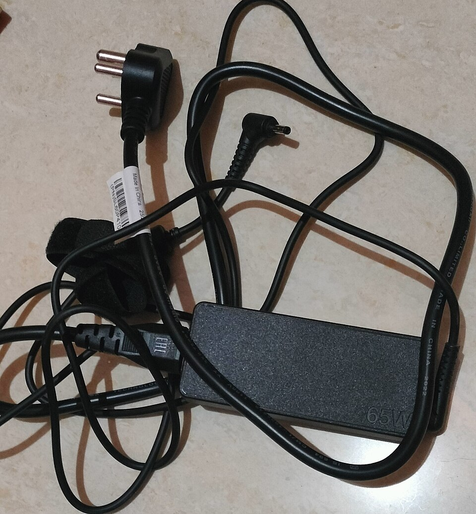
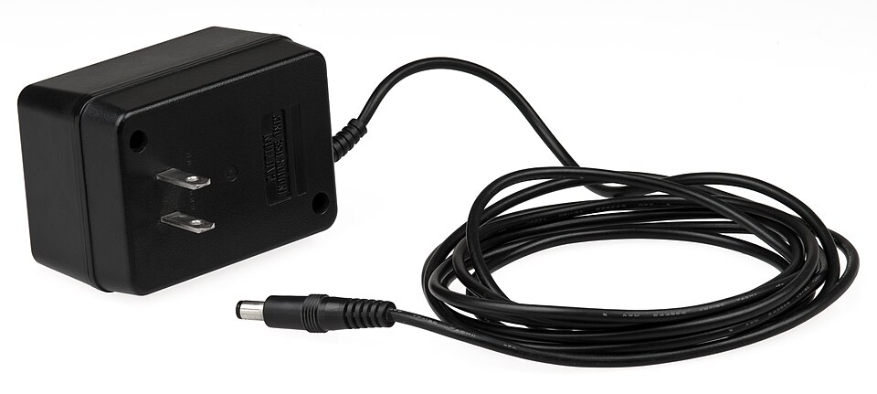
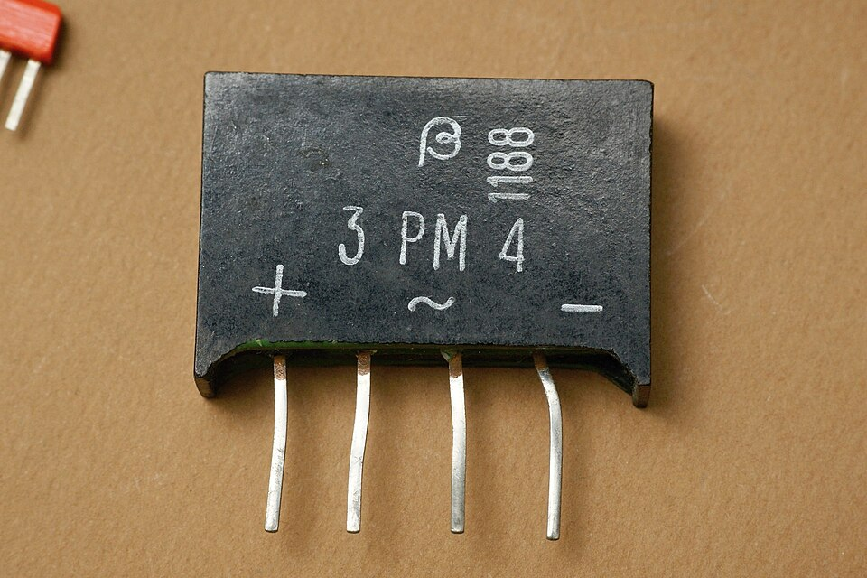
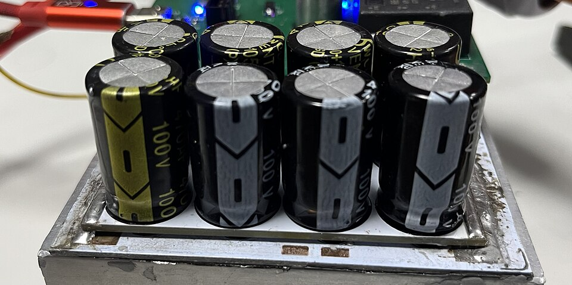
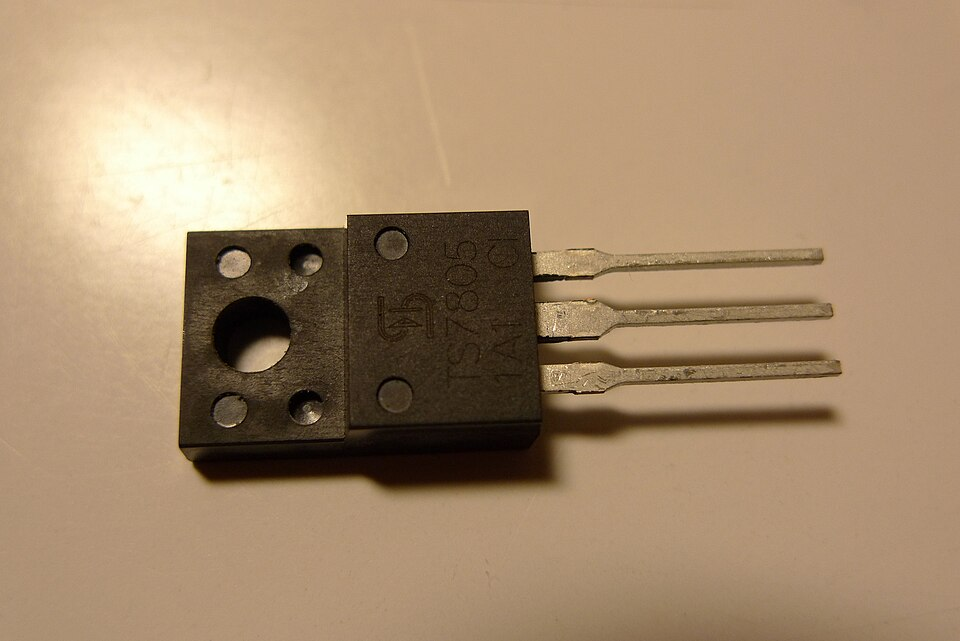
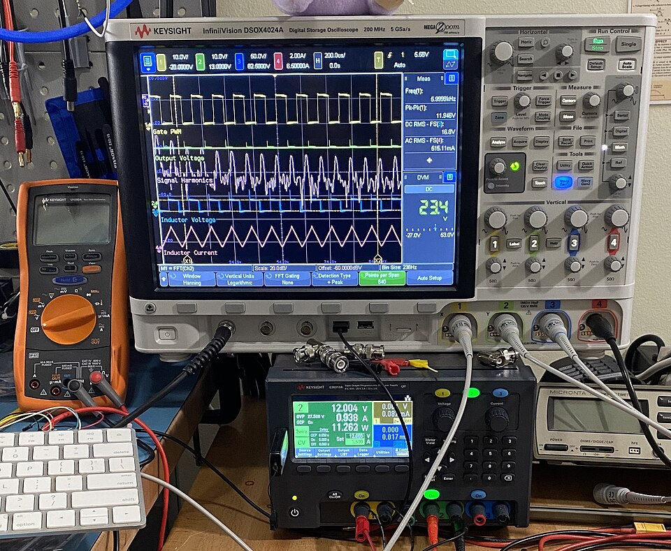
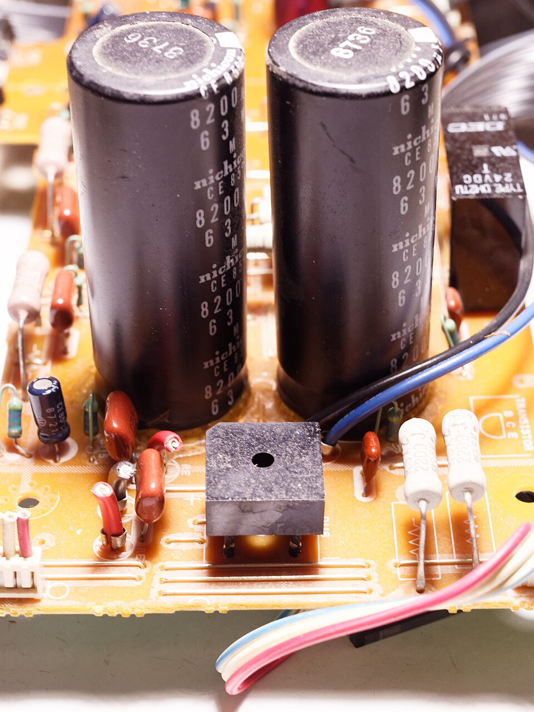
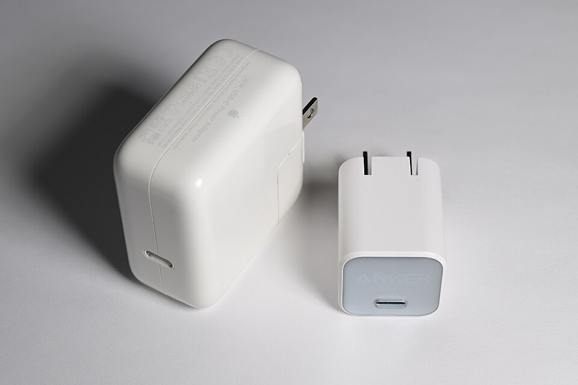

Linear vs SMPS
Power Supply
Two different ways of turning 230 V AC mains into the steady, low-voltage DC that every electronic device needs.
Use ← → arrow keys, Space, or the buttons below · F = fullscreen


Introduction to Power Supply
What it is and why every electronic device needs one
A power supply converts electrical energy from a source (in India, the 230 V, 50 Hz AC wall socket) into the exact voltage and current a device needs — usually low-voltage DC like 3.3 V, 5 V or 12 V.

Types of Power Supplies
Classified by what they convert and how they regulate
★ Highlighted: the two AC → DC families this presentation compares — Linear and SMPS.
What is a Linear Power Supply?
The classic, quiet, transformer-based supply
Definition
A linear power supply steps mains AC down with a heavy 50/60 Hz transformer, rectifies and filters it, then uses a linear regulator — a transistor working in its active (linear) region — to drop the extra voltage and hold the output steady.
💡 Simple analogy
Like a half-closed water tap: it controls the flow by throttling, and the “extra pressure” is simply wasted — in a linear supply it is wasted as heat.
Common linear regulator ICs

Components & Block Diagram of Linear Power Supply
Five stages, always in this order



Working Principle of Linear Power Supply
Follow the waveform as it moves through each stage
How the regulator holds the voltage
A series pass transistor sits between input and output. An error amplifier compares the output with a fixed reference voltage and continuously adjusts the transistor — like a resistor that changes itself automatically.
The price: wasted heat
| Input → 5 V at 1 A | Heat wasted | Efficiency |
|---|---|---|
| 7 V | 2 W | 71% |
| 12 V | 7 W | 42% |
| 24 V | 19 W | 21% |
What is SMPS (Switched Mode Power Supply)?
The modern, compact, high-efficiency supply
Definition
An SMPS first rectifies the mains, then a MOSFET switch turns it ON and OFF tens of thouyellows to millions of times per second. These high-frequency pulses pass through a small ferrite transformer, are rectified and filtered, and a feedback controller adjusts the pulse width (PWM) to keep the output constant.
💡 Simple analogy
Like flicking a tap fully ON and fully OFF very fast. A switch that is fully open or fully shut wastes almost no energy — the average flow is set by how long it stays ON.
Common SMPS types (topologies)
- A Bridge rectifier
- B Input filter capacitors
- C HF transformer
- D Output filter coil
- E Output filter capacitors
- ▥ Heat sinks (switches)
Components & Block Diagram of SMPS
Power path on top, feedback loop underneath
Working Principle of SMPS
Chop → transform → smooth → check → correct, thouyellows of times per second
Try it: PWM duty cycle
Average output ≈ D × Vin = 0.40 × 24 V = 9.6 V (simplified buck stage)
Wider pulses → more energy delivered → higher output. The controller widens or narrows the pulses automatically to hold the output steady.

Efficiency and Power Losses in Linear Supply and SMPS
Where the energy goes — and how much is wasted
Typical efficiency
Losses in a Linear supply
- Regulator heat (Vin−Vout)×I — the biggest loss
- Transformer copper & iron-core loss
- Rectifier diode voltage drop
Losses in an SMPS
- Switching loss — during each ON↔OFF transition; grows with frequency
- Conduction loss — I²R in the MOSFET, diodes and wiring
- Magnetic core loss — hysteresis & eddy currents in the ferrite
- Controller & gate-drive power, standby loss
Where 100 W of input goes
Typical example values.
Calculator: watts wasted
SMPS assumed 90% efficient. Linear efficiency ≈ Vout ÷ Vin.
Key Differences Between Linear Power Supply and SMPS
Side-by-side comparison
| Parameter | Linear Power Supply | SMPS |
|---|---|---|
| Working principle | Transistor in active region drops the extra voltage | Transistor switched fully ON/OFF (PWM) |
| Efficiency | Low: ≈ 30–60% | High: ≈ 80–95% |
| Transformer | 50/60 Hz, laminated iron core, heavy | 20 kHz – 1 MHz+, ferrite core, small |
| Size & weight | Large and heavy | Compact and light |
| Heat generated | High — needs big heat sinks | Low |
| Output noise / ripple | Very low, no switching noise | Higher; switching noise & EMI |
| Input voltage range | Narrow (e.g. 230 V ±10%) | Wide (90–264 V AC universal) |
| Output possibilities | Step-down only | Step-down, step-up or inverted; multiple outputs |
| Response to load change | Very fast | Slower (limited by control loop) |
| Design complexity | Simple, easy to repair | Complex |
| Cost | Cheap at low power, costly at high power | Cheaper at medium–high power |
Advantages and Disadvantages of Both Power Supplies
No supply is perfect — each wins in different situations
✔ Advantages
- Very low output noise and ripple
- Simple, robust circuit with few parts
- Fast response to load changes
- Almost no electromagnetic interference
- Easy to design and repair; cheap at low power
✘ Disadvantages
- Low efficiency (≈ 30–60%)
- Produces lots of heat → heat sinks / fans
- Heavy, bulky 50 Hz transformer
- Can only step voltage down; narrow input range
✔ Advantages
- High efficiency (≈ 80–95%), low heat
- Small and lightweight
- Works on 90–264 V AC anywhere in the world
- Can step up, step down, invert; multiple outputs
- Cheaper at medium and high power levels
✘ Disadvantages
- Switching noise & EMI — needs filtering
- Higher output ripple than linear
- Complex design, harder to repair
- Can draw distorted current from mains (needs PFC)
Applications of Linear Power Supply and SMPS
Where each one is used — and how to choose

- Hi-fi audio amplifiers & preamps
- Laboratory bench supplies
- Medical & measuring instruments
- RF / radio & sensor circuits
- LDO “clean-up” after an SMPS
- PCs, laptops, phone chargers
- TVs, monitors, set-top boxes
- LED drivers & lighting
- Telecom, servers, data centres
- EV chargers, industrial drives
Conclusion and Future Trends in Power Supply Technology
What we learned and where power supplies are heading
Conclusion
- Linear = quiet and simple, but wasteful and heavy.
- SMPS = efficient, compact and light, but electrically noisier.
- SMPS powers almost all modern electronics; linear still wins where low noise matters.
- Best designs often combine both: SMPS for bulk conversion + LDO for a clean final rail.
